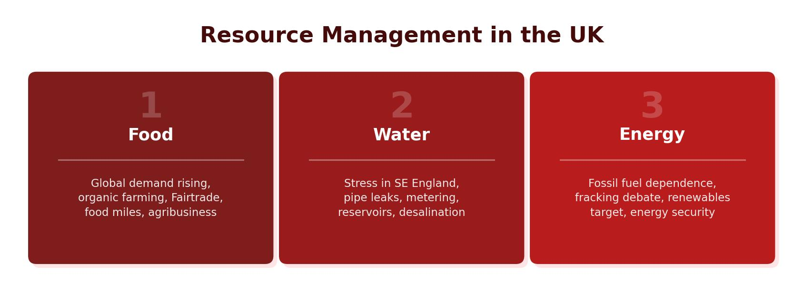

Why Is Energy Important?
Energy is essential for everyday life. It powers our homes, fuels our transport, runs factories and keeps hospitals, schools and businesses operating. Around half of all energy consumed globally is used by industry to manufacture products. The rest is split between transport, domestic (home) use and commercial buildings like offices and shops.
Energy security means having enough energy to meet the needs of people. Energy insecurity means not having enough. Generally, wealthier countries (HICs) have better energy security because they can afford to buy or produce the energy they need.

Areas of Energy Surplus and Deficit
Energy is not evenly distributed across the world. Some countries have large reserves of fossil fuels and produce more energy than they need — these have an energy surplus. Others consume more energy than they can produce and must buy it from elsewhere — these have an energy deficit.
- Low insecurity (energy secure) — northern North America, northern Asia (Russia), South-East Asia and Australia. These regions have large fossil fuel reserves or strong economies to purchase energy.
- High insecurity (energy insecure) — western South America, much of Africa and central Asia. These regions lack both energy resources and the money to import them.
- Medium insecurity — the UK and USA produce some energy domestically but do not have enough gas and oil to meet all their needs, so they import from countries like Russia (gas) and the Middle East (oil).
The Energy Mix
The energy mix describes the proportion of energy generated from different sources. Globally, fossil fuels (oil, gas and coal) account for around 87% of all energy production. The remaining 13% comes from renewable and nuclear sources. Different countries have different energy mixes depending on what resources they have available.
Why Is Energy Demand Rising?
Three main human factors are driving increased energy demand worldwide:
- Population growth — the global population is growing rapidly. More people means more energy is needed for homes, transport and industry.
- Economic development — as countries get wealthier, they build more infrastructure, factories and power stations. People buy more electrical items like fridges, TVs and smartphones.
- Modern technology — the more technology that is invented, the more items need plugging in. Data centres, electric vehicles and smart devices all increase energy demand.
Factors Affecting Energy Supply
Physical Factors
Several physical factors make it harder to secure energy supplies:
- Geology — is the energy source easy to reach? What is the cost of extracting it? Is there enough of the resource to justify the expense?
- Climate — extracting fossil fuels in extreme environments (such as the Arctic) is dangerous and expensive.
- Environment — drilling in natural habitats risks damaging ecosystems. Deep-sea drilling for gas and oil endangers ocean life.
When energy is easy to find, production increases and costs fall. Cheap energy encourages higher demand. When energy becomes harder to find, production falls, prices rise and people use less. This cycle means energy bills go up and down over time. As companies make more profit, they can invest in exploitation — reaching energy supplies from previously unobtainable sources using new technology, such as under-sea robots for deep-sea drilling. However, exploitation carries environmental risks including oil spills and habitat destruction.
As fossil fuels become scarcer and more expensive to extract, the pressure grows to find alternative energy sources. This is why the proportion of renewable energy in the global energy mix is gradually increasing.